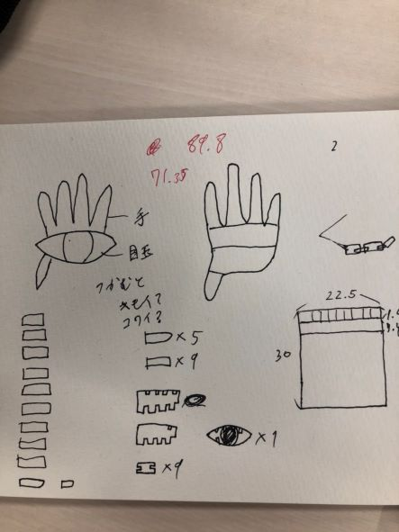

第二回 レーザーカッター
作品名「つかみとれ！」

出力

煙が出てめちゃめちゃ臭かった。花火をやった時を思い出した。
設計ファイル
DXFファイルこちらからダウンロード
作品の説明


大きな眼を手でつかんでいるようなデザイン。握りつぶさないように気をつけよう。


指は付け根から動くようになっている。開くのも閉じるのもお好みに。
なぜ作ろうと思ったか
気持ち悪い・怖いというのが視覚から入る情報で一番インパクトの強いモノだと思い、そういったものを制作しようと思った。
怖いものとはなんだろうと考えたとき、「人間だ」と頭に浮かび、人間の目と手を形にした。
全ての関節を可動できるようにしたらもっと気持ち悪いモノになると思うので挑戦したい。
反省
指定されたMDFより厚いモノで一回レーザーカットを行ってしまった。気をつけねば。
デジタルファブリケーショントップページ